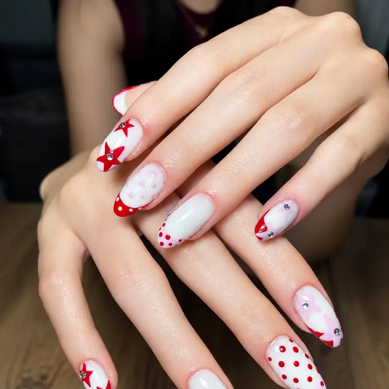

Gelin tırnağı, tek seferlik bir uygulamadan çok planlanması gereken bir süreç. Doğru zamanlama, elbiseyle uyum ve provanın atlanmaması, düğün sabahı sürprizle karşılaşmamanızı sağlıyor. İzmir'de gelin tırnağı için hem provada hem düğün günü adresinize geliyoruz.

Zamanlama: Ne Zaman Ne Yapılmalı?
2-3 Ay Önce
Tırnak güçlendirme ve düzenli bakıma başlayın. Kırılgan tırnakla düğüne girmemek için en kritik dönem bu.
3-4 Hafta Önce
Prova randevusu. Form, uzunluk ve tasarım denenir; fotoğrafta nasıl durduğuna birlikte bakarız.
2-4 Gün Önce
Asıl uygulama. Düğün sabahına bırakmıyoruz — hem zaman baskısı olmasın hem aksilik olursa düzeltme payı kalsın diye.
Düğün Günü
Gerekirse son rötuş. Kına ve nişan için ayrı tasarım isterseniz onu da takvime ekliyoruz.
En sık yapılan hata: uygulamayı düğün sabahına bırakmak. Saç, makyaj ve fotoğrafçı aynı saatlere sıkıştığında tırnak için gereken süre kalmıyor ve acele edilen uygulama daha çabuk kalkıyor.
Provanın Önemi
Prova, gelin tırnağını normal randevudan ayıran şey. Provada şunlara bakıyoruz:
- Uzunluk: Günlük hayatta uzun tırnak kullanmıyorsanız, düğünde çok uzun forma geçmek yüzük takarken ve yemek yerken zorlayabilir.
- Ten ve elbise uyumu: Elbisenizin beyaz tonu (kırık beyaz, ekru, buz beyazı) tırnak renginin nasıl duracağını doğrudan etkiler.
- Fotoğraf testi: Bazı parlak ve sedefli tonlar flaşta beklenenden farklı çıkar. Provada telefonla flaşlı fotoğraf çekip birlikte değerlendiriyoruz.
- Yüzük görünümü: Nişan ve alyansla birlikte nasıl durduğuna bakılır — fotoğrafların en çok yakınlaştığı detay bu.
Popüler Gelin Tasarımları
- Klasik French: Zamansız, her elbiseyle uyumlu, yıllar sonra fotoğrafa bakınca eskimeyen seçenek.
- Baby boomer ombre: Pembeden beyaza yumuşak geçiş; French'in daha modern yorumu.
- Nude ve şeffaf tonlar: Sade gelinlikte eli uzun gösterir, dikkati yüzüğe bırakır.
- Aksan detay: Yüzük parmağında ince kristal, dantel motifi veya minimal çiçek — gelinliğin dantelinden ilham alınabilir.
Diğer törenler için özel günler için nail art ve detaylı hazırlık için gelin tırnağı rehberimiz yol gösterebilir.
Gelin Grubu için Aynı Adreste Seans
Gelin, anne, kayınvalide, kardeş ve nedimeler için aynı adreste arka arkaya seans planlıyoruz. Düğün öncesi herkesin ayrı ayrı salona gitmesine gerek kalmıyor; hem zaman kazanıyorsunuz hem kişi başı daha avantajlı oluyor. Kaç kişi olacağınızı önceden bildirmeniz süre planlaması için yeterli.
Sık Sorulan Sorular
Gelin tırnağını düğünden kaç gün önce yaptırmalıyım?
Asıl uygulama için düğünden 2-4 gün önceyi öneriyoruz. Bu aralık hem uygulamanın tazeliğini korur hem de olası bir aksilikte düzeltme payı bırakır. Düğün sabahına bırakmak, saç ve makyajla çakıştığı için en sık yaşanan sorundur.
Prova şart mı?
Şart değil ama güçlü tavsiyemiz. Provada uzunluk, renk ve fotoğrafta nasıl durduğu test edilir. Düğün günü ilk kez denenen bir form veya renk, beklentinizi karşılamazsa değiştirecek zaman kalmıyor.
Gelin tırnağı düğünden sonra ne kadar dayanır?
Kalıcı oje üzerine yapıldıysa 2-3 hafta, protez tırnak üzerine yapıldıysa dolum zamanına kadar 2-4 hafta korunur. Balayına çıkacaksanız bu süre genelde yeterli oluyor; dönüşte dolum veya söküm için randevu planlayabiliriz.
Anne ve nedimelere de aynı gün uygulama yapıyor musunuz?
Evet. Aynı adreste arka arkaya seans planlıyoruz. Kaç kişi olduğunuzu ve kimin hangi uygulamayı istediğini önceden yazarsanız toplam süreyi ve teklifi çıkarıyoruz.
Nişan ve kına için ayrı tasarım yapılabilir mi?
Tabii. Birçok gelin nişan ve kına için daha sade, düğün için daha detaylı bir tasarım tercih ediyor. Tüm tarihleri baştan paylaşırsanız takvimi buna göre kuruyoruz.
Düğün Tarihinizi Şimdiden Ayırtın
Gelin randevuları sezonda hızlı doluyor. Düğün tarihinizi ve düşündüğünüz konsepti yazın; prova ve düğün günü planını birlikte kuralım.